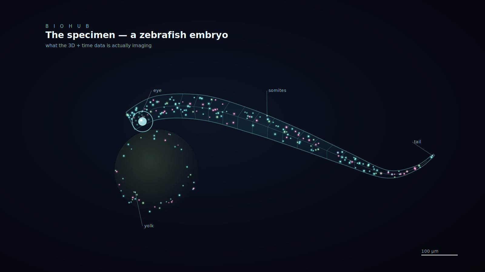

01 / BIOHUB · MACHINE LEARNING · 3D COMPUTER VISION
Cell Tracking During Development
Bronze Medal · Top 8.5%
Extended an open-source deep-learning pipeline for 3D cell detection, temporal tracking, and lineage reconstruction using ensembles of pretrained 3D U-Net and transformer models.
PyTorch
3D U-Net
Transformers
CUDA
ILP
View Kaggle result ↗

CELL DETECTION / TRACKING / LINEAGE